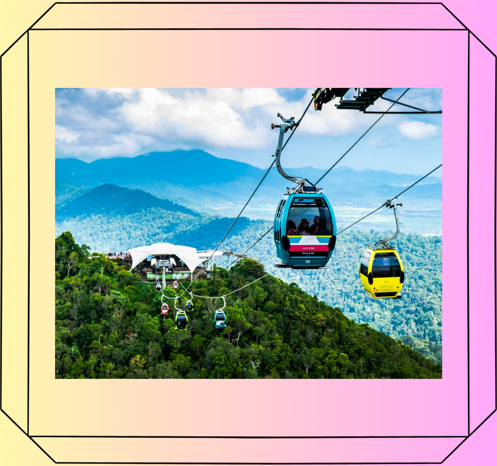
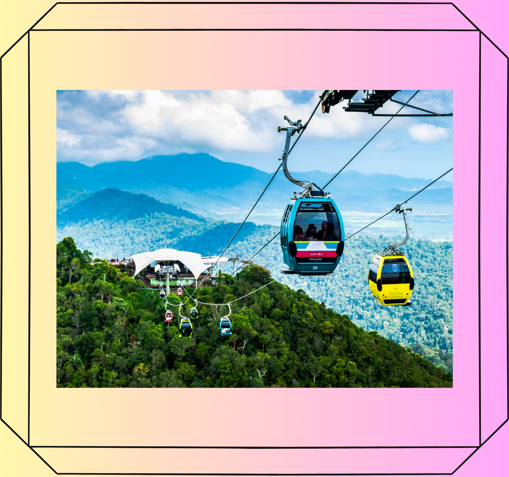

Salah satu tempat menarik di Kedah yang terkenal yang terdapat di Pulau Langkawi ialah Langkawi Sky Bridge. Ia adalah sepanjang 125m dan terletak 2,300 kaki di atas paras laut, menjadikannya jambatan pejalan kaki yang paling menakjubkan di dunia. Reka bentuk lengkung unik jambatan ini membolehkan pengunjung untuk mengamati keindahan pulau ini dari pandangan mata burung — sesuatu yang anda tidak boleh ketinggalan jika anda melawat Pulau Langkawi.
 
